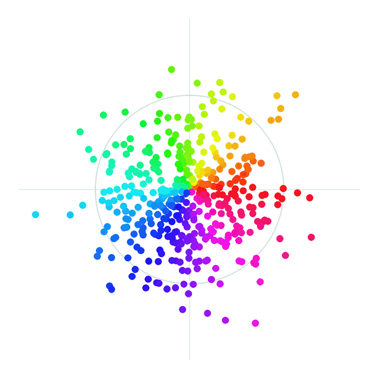

Avoiding collapse
This post keeps track of the methods proposed to avoid collapse in self-supervised learning. It is meant for a quick look at their history, with a short description of each one.
The collapse problem
Many self-supervised methods train a network to give similar embeddings to two related inputs, such as two crops of the same image. The easiest way to do that is to ignore the input and always output the same vector. The loss is minimised, but the embeddings carry no information. This is collapse, and every method below adds something to prevent it.

Collapse does not have to be total. In dimensional collapse, the embeddings do not shrink to a single point, but they only spread along a few directions: a 2048-dimensional embedding may effectively use a few dozen. Training looks healthy, the loss is fine, and the representation is still much poorer than it could be.
It is subtler and more common than complete collapse. Even methods designed to avoid collapse can suffer from it. It is one reason why methods that constrain the whole distribution of embeddings, not just a constant output, came to matter.
A short history
Each milestone below opens with a short explanation. Filled dots mark the turning points.
- 1993
Siamese networksTwo copies of one network compare two inputs.
Bromley and colleagues verified signatures with two copies of the same network, sharing their weights. Matching signatures should land close together, forgeries far apart.
From the very start, the network was shown negative pairs (forgeries), so it could not simply map everything to one point.
- 2006
Contrastive loss (DrLIM)Pull matching pairs together, push the rest past a margin.
Hadsell, Chopra and LeCun turned the idea into a general loss: similar pairs are pulled together, dissimilar pairs are pushed apart until they are at least a margin away.
It is the template for everything contrastive that followed: collapse is avoided because negatives must stay apart.
- 2018
DeepClusterLearn by predicting cluster labels of your own features.
Caron and colleagues alternate between clustering the network's features with k-means and training the network to predict those cluster labels.
Here collapse means everything falling into one cluster. The fix is practical: empty clusters are re-seeded and training samples are balanced across clusters.
- 2018
Memory banks and InfoNCEScore the right match against many negatives at once.
Instance discrimination (Wu and colleagues) treats every image as its own class and keeps a memory bank of stored embeddings to use as negatives.
CPC (van den Oord and colleagues) introduced the InfoNCE loss: a softmax that scores the true match against many negatives. It became the standard contrastive loss.
- 2019
MoCoA queue of negatives, encoded by a slow momentum encoder.
He and colleagues keep a queue of negatives from past batches. To keep old and new negatives comparable, they are encoded by a momentum encoder, a slowly updated (EMA) copy of the network.
This is where the EMA copy first appears in contrastive learning (Mean Teacher had used one in 2017 for semi-supervised learning); it later becomes the main anti-collapse tool of its own.
- 2020
SimCLRNegatives from a huge batch, plus strong augmentations.
Chen and colleagues drop the queue: every other image in a very large batch is a negative. Strong augmentations and a small projection head on top of the encoder make it work.
The cost of the contrastive family shows clearly here: good results need thousands of negatives per step, and two photos of different dogs are pushed apart as if they had nothing in common.
- 2020
BYOLNo negatives at all: an EMA teacher, a predictor and a stop-gradient.
Grill and colleagues showed negatives are not needed. An online network with an extra predictor head learns to match a target network, which is an EMA copy of the online one and receives no gradients (a stop-gradient).
The loss still allows collapse, but in practice training does not fall into it. Why exactly was debated for years.
- 2020
SwAVPredict cluster codes across views, with clusters forced to be used evenly.
Caron and colleagues cluster online: the cluster code of one view is predicted from another view. The Sinkhorn–Knopp algorithm forces each batch to spread evenly across all clusters, so everything cannot fall into one.
The cost of the clustering family: the number of clusters and the balancing settings become new hyperparameters.
- 2020
SimSiamA stop-gradient and a predictor are enough, no EMA needed.
Chen and He removed the EMA teacher: two identical branches, a predictor on one side and a stop-gradient on the other.
Remove the stop-gradient and it collapses at once, so the stop-gradient is what holds it up, not the EMA.
- 2020
W-MSEWhiten every batch before comparing views.
Ermolov and colleagues whiten the embeddings of each batch (zero mean, identity covariance) before comparing the two views. A whitened batch cannot collapse, by construction.
It opens the regularisation family: instead of relying on dynamics, constrain the embeddings directly.
- 2021
Barlow TwinsPush the cross-correlation between views toward the identity.
Zbontar and colleagues compute the cross-correlation matrix between the two views' embeddings and push it toward the identity.
The diagonal makes each dimension agree with itself across views; the off-diagonal makes different dimensions carry different information, which also fights dimensional collapse.
- 2021
DINOAn EMA teacher kept balanced by centering and sharpening.
Caron and colleagues train a student to match the output distribution of an EMA teacher. Two opposite tricks keep it stable: centering subtracts a running mean so no single output dominates, and sharpening uses a low temperature so the outputs do not become uniform.
Each trick alone leads to collapse; balanced against each other, they hold.
- 2021
VICRegThree explicit terms: variance, invariance and covariance.
Bardes, Ponce and LeCun split the job into three terms: keep every dimension's spread above a threshold (variance), make the two views close (invariance), and decorrelate the dimensions (covariance).
It is the method the Path Towards Autonomous Machine Intelligence paper recommends for training a JEPA. Its limit: it controls only the mean and covariance, and the covariance term grows quadratically with the embedding size.
- 2021
MAEReconstruct masked pixels. A fixed target cannot collapse.
He and colleagues hide 75% of an image's patches and reconstruct the missing pixels. The target is the image itself, so there is nothing to collapse: no negatives, no EMA.
The price is semantics: the model spends its capacity on texture and lighting. I-JEPA shows that predicting representations instead of pixels is worth 26 points in the same setup.
- 2023
I-JEPA and DINOv2EMA teachers at scale; DINOv2 adds a term that spreads embeddings out.
I-JEPA and later V-JEPA predict in representation space with exactly the BYOL-style machinery: an EMA target encoder and a stop-gradient.
DINOv2 scales up DINO and adds the KoLeo regulariser, which pushes the embeddings in a batch apart so they cover the space evenly. Effective, but the stack of tricks keeps growing.
- 2025
LeJEPA and SIGRegMake embeddings an isotropic Gaussian, and collapse is ruled out by design.
LeJEPA asks what distribution the embeddings should follow, and proves it is the isotropic Gaussian. SIGReg enforces it by testing many random 1-D projections against a standard normal, which covers all moments, not just the first two.
A constant embedding, or one squeezed onto a few directions, cannot look Gaussian, so collapse is excluded by the objective itself. No negatives, no EMA, no stop-gradient, one hyperparameter.
- 2026
LeWorldModelSIGReg carried into world models.
LeWorldModel uses SIGReg to train a world model end-to-end from pixels, something that previously needed a frozen encoder or six extra loss terms.
Six ways to stop it
Seen together, the fixes fall into six families. Each blocks collapse in a different way, and each brings its own cost:
| Family | How collapse is prevented | Main cost |
|---|---|---|
| Contrastive | Negatives are pushed apart | Many negatives, false negatives |
| Clustering | Clusters must be used evenly | Extra hyperparameters |
| Asymmetry | EMA teacher, predictor, stop-gradient | Works by dynamics, not by argument |
| Regularisation | Variance and covariance constraints | Only the first two moments |
| Reconstruction | Target fixed by the pixels | Low-level, less semantic features |
| Distribution matching | Embeddings must be isotropic Gaussian | One weight to set |